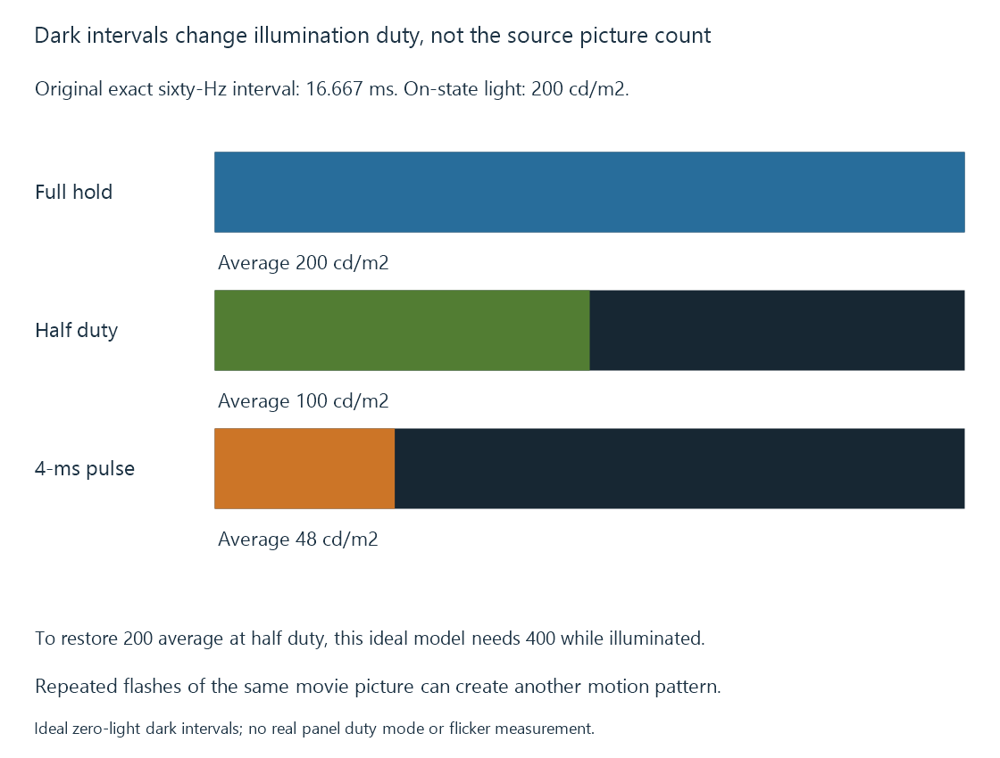

Black-frame insertion and display persistence
Black-frame insertion or timed dark intervals reduce visible picture persistence by interrupting illumination between presentations.
A display can shorten how long a picture remains illuminated by inserting dark intervals or timing its light output into shorter pulses. Black-frame insertion, often abbreviated BFI, is one name for this kind of persistence-reduction behavior.
The purpose is to change when light is visible, not to add missing source pictures.
A held picture and a light pulse
In an original exact sixty-Hz exercise, one picture interval lasts 16.667 ms.
Route A illuminates the picture continuously for that interval. Route B illuminates it for the first 8.333 ms and remains dark for the second 8.333 ms.

A tracking eye receives the held object for less time on Route B. In a simple persistence model, that can reduce tracking smear.
An LCD implementation can time its backlight while its pixel state is retained. An emissive implementation can drive its own dark/light pattern. The product’s actual mechanism, timing and motion processing determine the result.
Average light changes with duty cycle
Assume a declared 200-cd/m² level whenever the picture is illuminated, with ideal zero light during the dark interval.
The half-duty route has time-average luminance:
200 × 0.5 = 100 cd/m²
To restore 200 cd/m² time-average light under the same ideal half-duty schedule, the illuminated level would have to be 400 cd/m².
A four-millisecond pulse per sixty-Hz interval has duty fraction 4/16.667… = 0.24. At the same 200-cd/m² illuminated level, its modeled time average is 48 cd/m².
Real output limits, pulse shape and other processing can prevent simple compensation. Peak brightness and sustained brightness consequently remain relevant.
A dark interval does not create another movement sample
If a 24-fps movie is repeated on a faster output, several illumination pulses can show the same source position before the next source picture arrives.
A tracking eye can then perceive separated images of that one held position. The exact result depends on pulse timing, tracking and source motion.
Motion interpolation addresses a different question: it estimates intermediate positions between source pictures. BFI changes the emission pattern of the presented pictures.
Frame-rate matching also remains relevant. Equal source-picture duration and short emission persistence are independent properties.
Timing and comfort belong to the selected mode
Dark intervals can introduce visible flicker or alter brightness, and the response depends on the mode and viewer. A feature name does not establish a suitable pulse rate or duty cycle for every situation.
For an Emby comparison, preserve the scene and source cadence while identifying the output timing and the actual illumination feature. That makes it possible to distinguish shorter persistence from interpolation, sharper pixel transitions or a changed repeat schedule.
See Also
- Display response time and motion blur
- Display refresh rate
- Judder and uneven picture cadence
- Display peak brightness